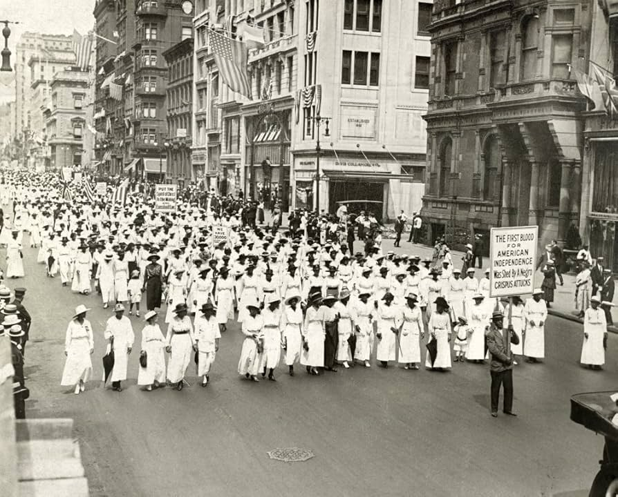

There is a rich history of protests in NYC, dating back to strikes and riots as early as the 1800s. The city's first peaceful march occured in July of 1917 consisting of near 10,000 protesters. It was a civil rights protest organized by the NAACP and dubbed the 'Silent Protest Parade,' taking a stand against the racial violence of the time. Protests like these continued into the civil rights era of the 50s and 60s. Later there also occured protests against the Vietnam War, particularly in 1967, when Martin Luther King Jr. led over 400,000 marchers accross the city.


New York is also famous for it's protests advocating for LGBTQ+ rights, particularly the Stonewall Uprising in 1969, led by icons like Marsha P. Johnson and Sylvia Rivera, standing up against police mistreatment of queer people. This set the stage for Pride Month in June, and the annual pride parade in NYC. These riots were vitally important in kickstarting the queer rights movement, and their legacy is still seen today.
In recent years, New Yorkers have carried on the legacy of our predecessors, using peaceful marches to advocate for the human rights of people of varying races, genders, ethnicities, and documentation statuses. These movements include the Black Lives Matter and anti-police brutality protests in the late 2010s and early 2020s and pro-choice movements after the overturning of Roe V. Wade. Most recently, our streets have been the background for No Kings Day marches and anti-ICE strikes. In today's political climate, we continue to use protesting as a way to exert our power and raise our collective voice.